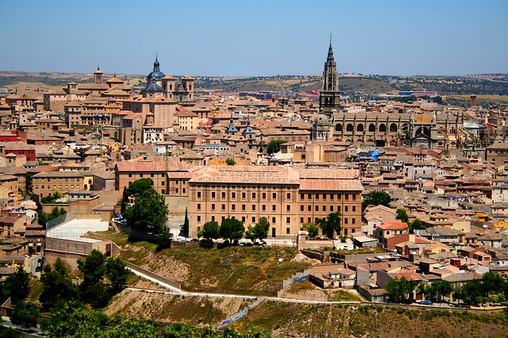
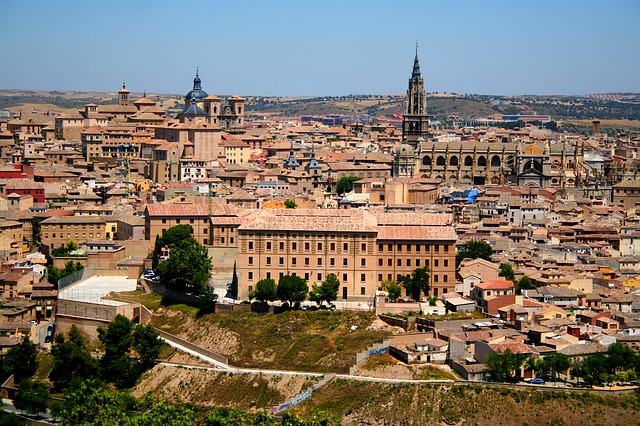
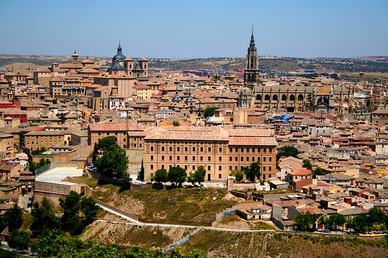

Toledo es un municipio y ciudad de España, capital de la provincia homónima y de la comunidad autónoma de Castilla-La Mancha. Es conocida como la ciudad imperial
por haber sido la sede principal de la corte de Carlos I y también como la ciudad de las tres culturas
, por haber estado poblada durante siglos por cristianos, judíos y musulmanes. Toledo, con 83 741 habitantes (INE, 2017), es el tercer municipio más poblado de la comunidad autónoma.

El casco histórico está situado en la margen derecha del Tajo, en una colina de cien metros de altura sobre el río, el cual la ciñe por su base, formando un pronunciado meandro conocido como Torno del Tajo
. El municipio cuenta con barrios muy separados del núcleo principal: el de Azucaica, en la orilla derecha del río, que tiene su origen en una antigua pedanía de la ciudad, dista unos 7 km del centro de la ciudad, mientras que el de Santa María de Benquerencia, situado prácticamente enfrente del anterior en la margen izquierda del Tajo, sitúa su centro a unos 8 km del de la ciudad. El municipio es considerado individualmente como una comarca en la división realizada por la Diputación Provincial, aunque desde un punto de vista estrictamente de geografía física la ciudad es puerta de la comarca natural de La Sagra, que tradicionalmente se ha considerado que comenzaba en la propia puerta de Bisagra.
La historia de la ciudad se remonta a la Edad del Bronce. Fue un importante centro carpetano hasta su conquista romana en 193 a. C. y quedan diversos restos de la actividad romana en la ciudad, como el acueducto o el circo. Tras las invasiones germánicas, la ciudad se convertiría con Leovigildo en capital y, posteriormente, en principal sede eclesiástica del Reino visigodo. En el año 711, después de una resistencia moderada, Toledo fue conquistada por los musulmanes dirigidos por Táriq ibn Ziyad. Durante el dominio musulmán, la antigua capital visigoda se caracterizó por su oposición e individualismo, concretado en la Taifa de Toledo. Alfonso VI reconquistó la ciudad en 1085. Durante la Edad Moderna la ciudad destacó como sede de los Reyes Católicos y por su participación en la guerra de las Comunidades de Castilla. Al trasladarse la corte a Madrid en 1561 la ciudad entró en decadencia, acentuada por la crisis económica del momento. Ya en época contemporánea, su alcázar se convirtió en un símbolo de la Guerra Civil debido a su asedio y defensa. En 1983 se convirtió en capital de Castilla-La Mancha, manteniendo la capitalidad de la provincia de Toledo.
Tradicionalmente, la industria metalúrgica ha sido la base económica, sobre todo por la fabricación de espadas y cuchillos. En la actualidad la gran mayoría de la población se dedica al sector servicios, que también refleja el mayor número de parados. En cuanto a infraestructuras, la ciudad cuenta con diversas carreteras, incluida una autopista de peaje. Existe una línea de ferrocarril AVANT (Renfe) que conecta Toledo-Madrid en 33 minutos. Cuenta además con diversas infraestructuras sanitarias, incluido un Hospital Nacional de Parapléjicos, deportivas y militares, como la Academia de Infantería.
Toledo es Patrimonio de la Humanidad desde 1986 y entre sus edificios se destacan la catedral de Santa María, de estilo gótico del siglo xiii, y el monasterio de San Juan de los Reyes, gótico isabelino del siglo xv. La ciudad ha sido lugar de nacimiento o residencia de artistas como Garcilaso de la Vega o el Greco.